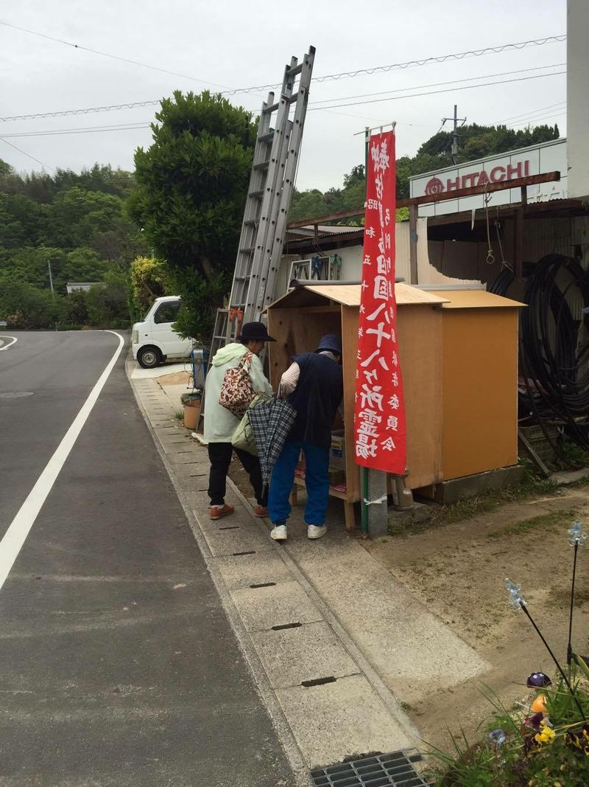
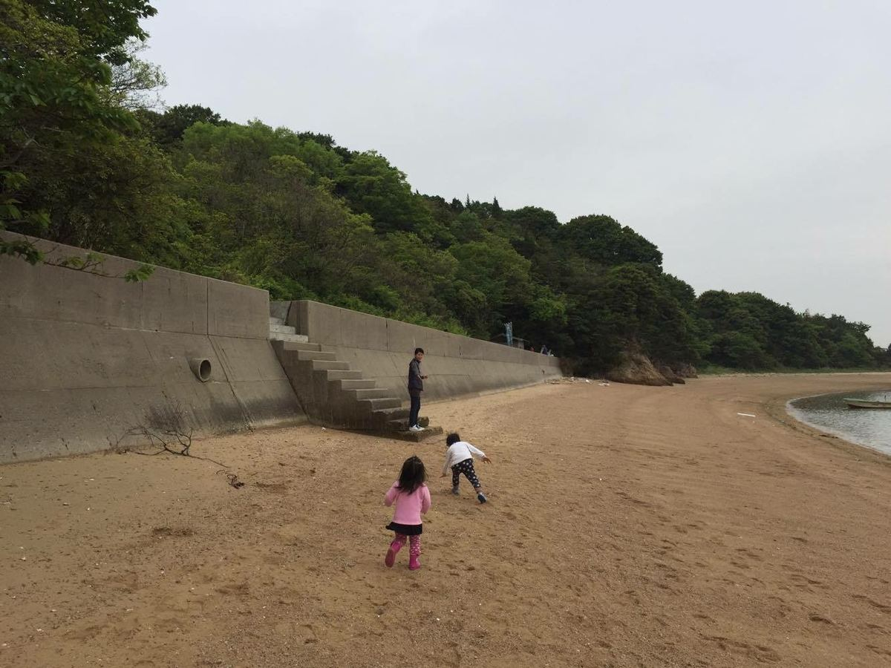
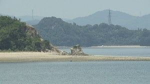
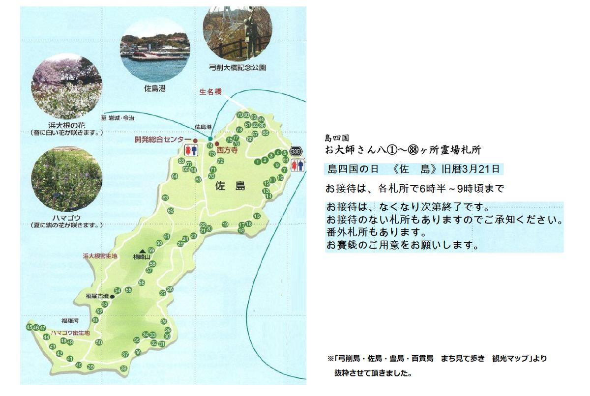
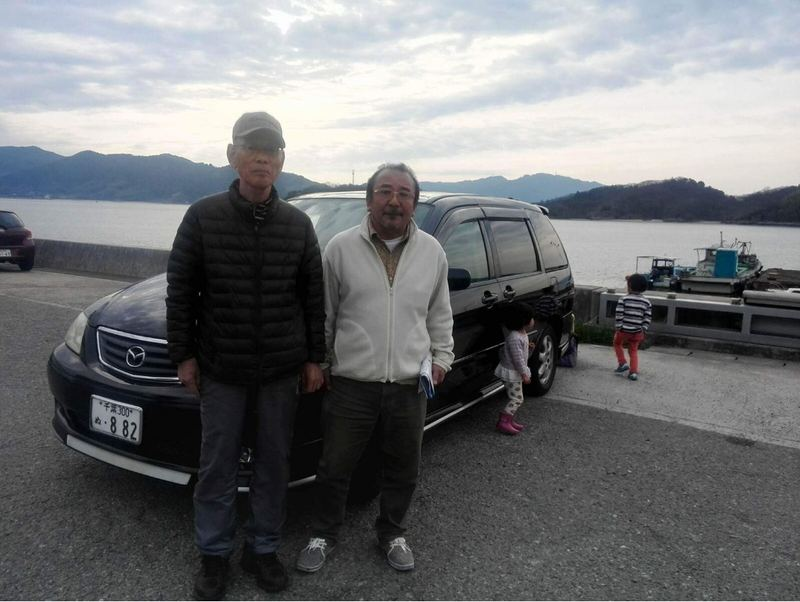
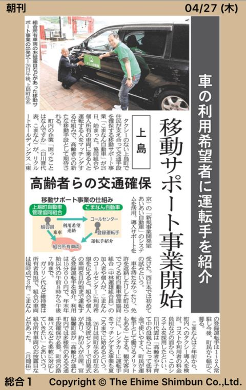
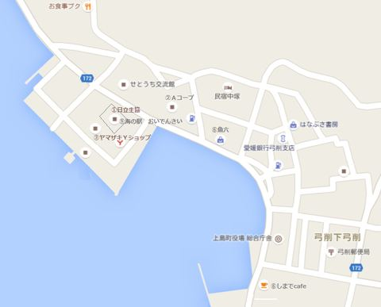

島の暮らし
島四国、島親、こまなん自動車。佐島で起きていること。
佐島の島四国
ここ上島町でも弘法大師信仰は篤く、四国八十八ヶ所巡礼は人々の憧れでしたが、伝馬船で移動する時代には大変な事でした。そこで、自分の島に八十八ヶ所を勧請し、島を一回りすれば八十八ヶ所巡礼コンプ！と言うのが島四国です。凄い発想ですね。瀬戸内のあちこちの島に残っています。
弘法大師入定の日である旧暦3月21日が島四国の日です。参加しやすい様に4月の第何日曜と決めている島もありますが、佐島は巡礼道の一部、蛸崎に渡る浜が干潮でないと歩けないので旧暦を守っています。
平日でも子供が小学校に間に合うように朝6時半から始ま9時前にはおしまいです。お接待をする札所は少なくなったので、全て回っても2時間くらい。佐島の後で11時頃までやっている生名島や岩城島をハシゴするのも楽しそう！
島のあちこちにある札所はいつも綺麗に掃除され、花が供えられています。
汐見の家にも五番札所らしい石仏があり、オーナーの曽祖母が健在だった昭和30年代まではお接待をしていたようです。
お接待も復活したいですが、今年は先ずお接待を受けてみました。
島のおかあさん、富美ちゃんに案内して貰ってみんなでてくてく。ナカサカ電機さんの札所でもお接待です。のぼりがあるとワクワクしますね。島のおかあさん、直ちゃんも家の前でお接待。管理人のけいこさんの子供のゴウくんココちゃんはお菓子を貰って大喜びです。
蛸崎まで回って2時間くらい？お天気にも恵まれ、春ののどかな海辺をめぐる佐島の島四国。命延ぶる心地がしそうです。
2017年の島四国は4月17日(月)。メモしておいて下さいね。ちなみに2018年は5月6日(日)、2019年は4月25日(木)、2020年は4月13日(月)です。


〇蛸崎。上島町HPより転載させて頂きました。佐島でも蛸がよく捕れます。


※かなり前にネットで見つけたものから抜粋させて頂きました。 町役場か観光協会が発行したものと思いますが転載ご容赦下さい。
汐見の家、島親やります
弓削高校は2020年度より全国からの留学生を受け入れています。
島親とは、島の大人が一人暮らしの島留学生をサポートする仕組みで、食事や釣り、SUP（！）などに声を掛けたり、お互い無理のない心地よい関係を目指しています。
2022年春から、佐島で新たにホームステイを受け入れて下さるご夫婦がいらっしゃいます。汐見から徒歩3分、とても温かく親切なご夫婦です。汐見も時々食事のお手伝いをさせて頂くことになりました。手伝いと言いますか、汐見でシェアごはんがある時にご参加頂けます。
遠慮なく自慢しますが、汐見のゲストさんやヘルパーさんは個性的でいい人ばかり。ふらっと遊びに来る島のお父さんお母さん、お姉さんお兄さんも、年齢を越えて良き友人になってくれることと思います。多種多様な人に出会いたい学生さんには最高の環境です。
ホームステイは女子限定で2名まで。独立したお子さんの部屋を使って頂きますが、広くて立派！安心して過ごせる環境です。高2、高3からの受け入れも可能です。
窓口は弓削高ですが、汐見についてのご質問はDMなどで遠慮なくお寄せ下さい。入居条件は地域みらい留学のHPからご覧下さい。
島ぐらしへようこそ！
＊弓削高と地域みらい留学、上島町公営塾・ゆめしま未来塾の情報はこちらから！
愛媛県立弓削高等学校
地域みらい留学・弓削高等学校
ゆめしま未来塾
小出さんと実録こまなん自動車
「こまなん自動車」は、移動サービスの新しい取り組みです。
2017年4月26日に行われた出発式には宮脇町長も来賓として出席され、翌日の愛媛新聞朝刊１面、南海テレビ、あいテレビで取り上げられました。
備忘録として、また、これから導入を検討される地域のご参考になればと思い、記録を残させて頂きます。（長いです。）
【佐島の空き家】
出発式に使われた黒のマツダMPV特別仕様車。佐島ご出身で千葉在住の小出剛さんが寄贈されました。
小出さんとお会いしたのは2017年2月12日。お寺さんや島のお母さんのご紹介でした。
数年前までお母様の花子さんが住んでおられた家を若い移住者に貸して頂ける事になり、千葉にお住まいのオーナー小出さんにご挨拶に伺ったのです。
小出さんは自動車メーカーのマツダを勤め上げた物流のプロフェッショナルです。ご両親が佐島の生まれで、お母様が最近まで住まわれていました。小出さんご自身も小学2～5年生まで佐島で過ごされています。
家を貸して下さるお礼方々、汐見の家のことをご説明したらとても喜んで下さり、帰りは愛車のマツダMPV特別仕様車で駅まで送って下さいました。
【あいあい自動車】
遡って2016年11月16日、佐島への移住を決めたばかりの武田（旧姓寺島）由梨ちゃんと私は銀座のリクルートにいました。
島通いをする内に目に入る島の数々の課題、その大きな一つが移動手段の確保です。ウーバーの特区とか取れないかなぁとか、相変わらず夢みたいなことをあちこちで話していたら、「西村さん、あいあい自動車って知ってますか？」と教えてくれたのがゆりちゃんでした。三重県菰野町で2016年2月から実証実験を開始。いいかも。さっそくホームページから連絡し、会社が終わってからゆりちゃんと待ち合わせてリクルートを訪問しました。
あいあい自動車事業部の責任者、金澤一行さんと中嶋圭吾さんは2人とも長野県佐久市のご出身。地方の課題を我が事と感じ、ふるさとにも貢献したいという気持ちが出発点というお話しに共感しました。
「あいあい自動車」の「あいあい」は「あいあい傘」から来ているそうです。自然な助け合い。素敵なネーミングです。
「スモールスタートが向いているんです。乗せて貰いたい人10人程度、有償ボランティアの登録運転手3-4人、車1台、これで始められます。」
乗せて貰いたい人は沢山います。運転手も最初は汐見のけいこさんとみえさん、その頃には移住しているはずのゆりちゃんとあやみちゃんが登録してくれれば大丈夫かも、あとは車。車を買い換える予定の友人に聞いてみたり、島に免許を返上する予定の方がいないか聞いてみたりしましたが簡単には見つかりません。最後は仕組みが出来る確証が得られたらFBで呼びかけるかなぁと考えていました。
【株式会社困ったことはなんですか】
その後、スモールスタートと言っても移住者だけで始めるのは無理と言うことになり、2017年1月末に隣の弓削島の課題解決企業「株式会社困ったことはなんですか」、通称こまなんの代表、白川さんにご相談しました。
白川さんは2年近く前から軽自動車によるタクシー事業の立ち上げに奔走していましたが、法的な壁などから開業に至らないと聞いていたのです。
「渡りに船です。」
即答いただいてからは目覚ましいスピードでした。
「判らないところを確認して、大枠固めちゃいましょうよ。」
リクルートの会議室の金澤さん、中嶋さんと私、上島町の白川さんをスカイプで繋ぎ、2-3時間みっちり打ち合わせをしました。
「こういう使い方は？」
「法律上、これはOK、これはNGです。」
「こういうニーズは拾えますか。」
「他地域にこういう事例があり、組み合わせれば良いのでは。」
「こまなん所有の車は使えますか？」
「NGです。」
金澤さんは法制度に精通し、弁護士意見も取り、所轄官庁にもきっちり確認しています。
グレーゾーンの仕組みは導入しませんと当初にお伝えしていましたが、どこに出しても問題の無い建て付けになり、これは行けるとの確信に全員の顔が輝きました。
「仕組みはこれでバッチリですね！町に持ち帰って組織を纏めます！」
こまなん立ち上げ前から上島町で8年の活動実績がある白川さんがボールを持ち帰り、わずか数週間で町のキーパーソンのご協力を得て体制を纏め上げられました。
【小出号】
そんなタイミングで移住者の貸家のオーナー、小出さんにご挨拶に伺ったのでした。
おいとまして家に帰り、そろそろお風呂に入るかなという時間に小出さんから着信がありました。
「今日はありがとうございました。」
「こちらこそ！長々お邪魔致しまして。」
「あなたの話を聞いて感銘を受けました。私も残りの人生で故郷のために何かをしたい。車を寄付させて下さい。」
「！！！」
幕張で長年1都6県の物流の責任者でいらした小出さんの愛車はMPVの特別仕様車。
9年間で9万キロ乗られ、ホイールまで替えられる徹底した整備で乗り心地も最高です。菓子折りがMPVに。わらしべ長者と言ってもスキップし過ぎでしょう。
2017年3月22日、小出さんはお友達と交替で800キロを運転して佐島に来て下さいました。
汐見では小学校の同級生や幼なじみにお声掛けしてご飯会を開催。たけちゃんよう来たねと旧交を温められたと、こちらがお礼を言われて胸熱です。

【サービスイン】
島の会社と東京の会社、佐島をふるさとに持つ方が手を携えて出来た「こまなん自動車」の出発式には町長さんも来賓として来られ、町としての期待の高さを感じました。

その後、愛媛と東京をスカイプで繋いで2回のフォローアップ会議を開きました。ご家族がわざわざご挨拶に来られ、涙ながらにお礼を伝えて下さったという白川さんのお話に感激したり、問題点について金澤さんからアドバイスを頂いたり、立場の違いがうまく噛み合ったように思えます。
2018年3月末、あいあい自動車事業は残念ながら事業を終了しました。高齢ドライバーや買い物・通院難民の問題が待った無しの状況になる中で、残念では済みません。
でも、こまなん自動車は独立してサービスを継続する事が出来、今でも弓削島を中心に30名ほどの常連さんが無くてはならないサービスとして利用されています。また、「次世代型の公共交通のカタチ」の具現化へ向けて更なるステップアップも計画しているそうです。
佐島での普及が今ひとつなので、これからご利用キャンペーンをしたいと色々考えです。一人でも必要な方に届きますように。
「ご縁わらしべ長者」で開業出来た汐見の家ですが、また素敵なご縁を頂きました。
ご協力、応援して下さった皆さま、ありがとうございました。これからもどうぞよろしくお願い致します。
お問い合わせはこちら！ こまなん自動車 tel: 0897-77-2222
西村暢子拝
メモ：
2016年
2月 リクルートあいあい自動車 三重県菰野中で実証実験開始
11月11日 ゆりちゃんにリクルートの「あいあい自動車」事業を教えて貰う
11月16日 ゆりちゃんとリクルート金澤さんと中嶋さんを訪問
2017年
1月30日 株式会社困ったことはなんですかの白川さんにあいあい自動車の運営を打診
2月初旬 東京－愛媛をスカイプで繋ぎ、白川さん金澤さん中嶋さんノブコで仕組みを検討
2月12日 空き家オーナーの小出さんにご挨拶
夕方、小出さんより愛車ご寄付のお申し出を頂く
3月22日 小出さん、幕張から寄付車を運転して佐島へ。おかえりシェアごはん開催
4月26日 出発式。宮脇町長とリクルート金澤さんが来賓に。4月27日付愛媛新聞掲載、あいTV放映。
10月 3日 東京－愛媛でフォローアップ会議
11月16日 東京－愛媛でフォローアップ会議
2018年
3月31日 リクルートあいあい自動車 事業終了
6月 佐島でご利用キャンペーン開始
三島のなかの交通手段
佐島、弓削島、生名島の３島は橋で繋がっており、町営バスが走っています。
また、芸予汽船で弓削島、生名島をはじめ岩城島など他の島々に移動出来ます。
①町営バス
佐島、弓削、生名の3島を可愛いバスが回ります。大人100円、子供50円
https://www.town.kamijima.lg.jp/site/access/5625.html
②芸予汽船
隣の島にも船で行く。島ぐらしですね。
弓削まで大人170円、子供90円。生名まで大人220円、子供110円。往復割引有
自転車は△以外の船は乗せられますが、荷物の量により積み込み出来ない場合があります。
http://www15.ocn.ne.jp/~eh-kisen/geiyo1.htm l
何かと行く用のある下弓削と佐島往復だけの、バスと船ミックスの時刻表はこちらです。
＜佐島港務所 バスと船の時刻表（2015年7月11日現在）＞←改正されているので目安にして下さい！
佐島から下弓削へ
[バス：久司浦（くじら）行、船：土生（はぶ）行]
7:19 船
7:57 バス
7:59 船（土日祝運休）
8:49 船（自転車、小荷物不可）
9:01 バス（日祝運休）
9:46 バス
10:22 バス（日祝運休）
10:39 船
11:52 バス
12:44 バス（日祝運休）
13:19 船
13:42 バス（日祝運休）
15:29 船（自転車、小荷物不可）
16:37 バス
16:49 船
18:19 船
19:39 船
下弓削（弓削港務所）から佐島へ
[バス：立石港務所行、船：今治行]
6:45 船
7:15 バス（日祝運休）
7:50 船
8:19 バス（日祝運休）
10:10 船
11:09 バス
12:39 バス（日祝運休）
12:45 船（自転車、小荷物不可）
13:50 船
14:28 バス
16:10 船
17:24 バス（日祝運休）
17:25 船（自転車、小荷物不可）
18:50 船
※フェスパを利用した時は、フェスパのバスで佐島まで往復できます。
佐島港発（フェスパ着時刻） フェスパ発（佐島港着時刻）
10:55 (11:01) 14:05 (14:11）
14:35 (14:41) 16:00 (16:06)
定期便以外のフェスパ送迎については直接お問合わせ下さい。
インランドシー・リゾート・フェスパ
http://fespa.jp/spa.html
住所：上島町弓削日比287
Tel：0897-77-2200
お買いもの
佐島には食料品店、飲食店がありません。
隣の弓削島の下弓削港付近にスーパーが2軒、コンビニが1軒、魚屋さんが1軒あります。
スーパーは19時半、コンビニは22時に閉まります。
①日立生協（日立造船因島生協弓削店）
住所：上島町弓削下弓削1037
tel： 0897-77-2030
営業時間： 9:30 ～ 19:30（元旦のみ休）
②Ａコープ（Ａコープ弓削店）
住所：上島町弓削下弓削119
tel: 0897-77-3134
営業時間：10:00〜18:30 日休
③ヤマザキＹショップ弓削店（コンビニ）
住所：上島町弓削下弓削1037
tel: 0897-74-0866
営業時間：月～金6:30～22:00、土日7:00～22:00
④魚六
こだわりの魚屋さん。店の半分は生簀！
弓削下弓削123-6
tel: 0897-77-2712
営業時間：10:00～18:00 1/1～3休。不定休。
⑤海の駅 おいでんさい
島のおばちゃんのボランティアグループのお店。
小さいお店ながら島ならではの農・海産物が魅力。
住所：上島町弓削下弓削1037 日立生協（地図①）内
TEL 0897-77-2114
営業時間 9：30～15：00
年中無休（年末年始4日間休店）
⑥しまでCafé
カフェ併設のショップに古来の藻塩づくりを復活・商品化した｢弓削塩｣や佐島の有機麦味噌など各種商品が揃います。
季節によっては柑橘類の｢ご自由にお持ち下さい籠｣が！
塩と味噌は汐見の家の基本調味料セットに含まれます。
住所：上島町弓削下弓削830番地1
tel: 0897-77-2232

まとまった買い物は因島モールへ。
住所：尾道市因島田熊町1160-1
○ユーホー因島店
Tel： 0845-22-8800
営業時間：9：00～20：00
ハローズ(24時間営業）ダイソー、靴流通センターなども出店しています。
弓削のコンビニが閉まった後、どうしても！という場合は生名立石港務所まで車かチャリを飛ばして
22:00か22:20のフェリーで因島に渡って23:05の便で戻るという荒技もありますが、
せっかく島に来たのだから、のんびりして下さいね。
泊まりに来ませんか
この家に泊まってみませんか。